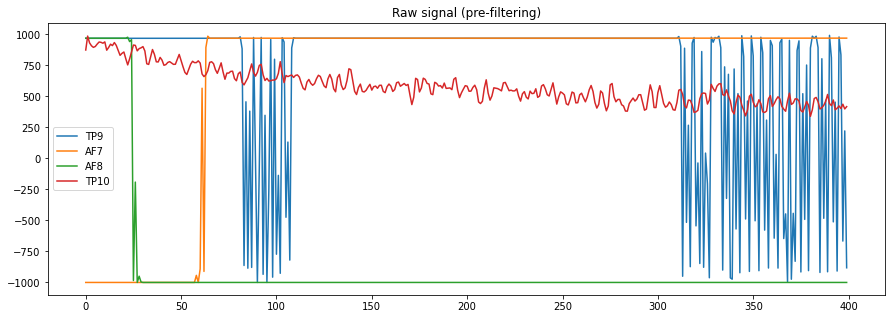
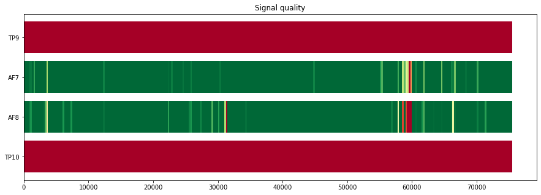

Signal¶
Various utilities to do signal filtering and quality checking.
# Imports
from pathlib import Path
import numpy as np
import seaborn as sns
import matplotlib
import matplotlib.pyplot as plt
from eegclassify import main, load, clean, features, preprocess, transform
from eegwatch.devices.muse import CHANNELS_MUSE
%matplotlib inline
plt.rcParams['figure.figsize'] = [16, 4]
N_SAMPLES_PLOT = 400
%%javascript
document.title='erb-thesis/Signal - Jupyter' // Set the document title to be able to track time spent working on the notebook with ActivityWatch
# Pick the last recording
recording_dir = Path("/home/erb/.eegnb/data/test/local/museS/subject0000/session001")
if recording_dir.exists():
files = list(recording_dir.glob("*.csv"))
else:
files = load._get_all_recording_files()
files = sorted(files)[-1:]
# Load the last files
df = load.load_eeg(files)
print("Recording ended: ", df['timestamp'].max())
X = df.drop(columns=['timestamp']).to_numpy()
print(X.shape)
Concatenating...
Concatenated!
Recording ended: 2020-11-01 13:21:16.822000027+00:00
(75696, 4)
ax = sns.lineplot(data=X[-N_SAMPLES_PLOT:, :], dashes=False)
ax.set_title("Raw signal (pre-filtering)")
ax.legend(labels=CHANNELS_MUSE);

X_f = clean.filter(X)
ax = sns.lineplot(data=X_f[-N_SAMPLES_PLOT:, :], dashes=False)
ax.set_title("Filtered signal")
ax.legend(labels=CHANNELS_MUSE);
Setting up band-pass filter from 3 - 40 Hz
FIR filter parameters
---------------------
Designing a one-pass, zero-phase, non-causal bandpass filter:
- Windowed time-domain design (firwin) method
- Hamming window with 0.0194 passband ripple and 53 dB stopband attenuation
- Lower passband edge: 3.00
- Lower transition bandwidth: 2.00 Hz (-6 dB cutoff frequency: 2.00 Hz)
- Upper passband edge: 40.00 Hz
- Upper transition bandwidth: 10.00 Hz (-6 dB cutoff frequency: 45.00 Hz)
- Filter length: 413 samples (1.652 sec)
# Check the stddev of each channel
# TODO: refactor signal check function to actually use this
X_check = X_f[-N_SAMPLES_PLOT:, :]
print("mean\t", np.mean(X_check, axis=0))
print("std\t", np.std(X_check, axis=0))
print("maxabs\t", np.max(np.abs(X_check), axis=0))
mean [-1.64251063 0.06141934 -0.23599383 -0.87210461]
std [149.67795336 5.16863847 5.43622433 148.12198823]
maxabs [503.54905413 14.8455845 18.4988983 492.59582391]
# std below this value is good
std_thres = 40
# std below this value is perfect
std_perfect = 10
def check(X: np.ndarray) -> float:
std = np.std(X, axis=0)
return std
def score(std: float) -> float:
qual = std_thres - np.clip(std, std_perfect, std_thres)
qual = qual / (std_thres - std_perfect)
return np.clip(qual, 0, 1)
assert score(std_thres) == 0
assert score(std_perfect) == 1
# Plot signal quality as timeline plot
from eegclassify.plot import TimelineFigure
tl = TimelineFigure(title="Signal quality", figsize=(16, 4))
cmap = matplotlib.cm.get_cmap('RdYlGn')
chunk_len = 250
for i, channel in enumerate(CHANNELS_MUSE):
events = []
for si in range(chunk_len, X_f.shape[0], chunk_len):
begin = si - chunk_len
end = si
segment = X_f[list(range(begin, end)), i]
quality = score(check(segment))
# Channels should be listed in top-down order, as in the muse-lsl viewer
chidx = len(CHANNELS_MUSE) - 1 - i
events.append((begin, end, cmap(quality)))
tl.add_bar(events, channel)
tl.plot()
